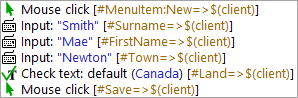
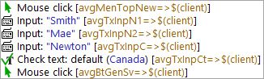
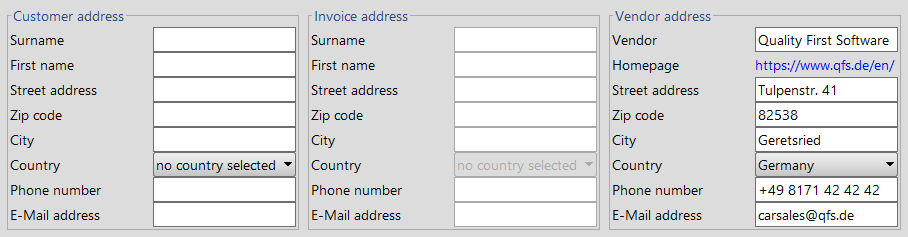

| Version 6.0.3 |
Regognition criteria can be linked to events in tests in two different ways. With the classic method, the criteria are stored as attributes of a 'Component' node (see 'Component' node). These are then referenced in the tests via their 'QF-Test component ID'. Alternatively, GUI elements can be addressed directly by the recognition criteria via SmartID (Preview). 'Components' are not neccessary in that case.
SmartIDs and classic recorded 'Component' nodes can be used alternatingly, and even combined when neccessary. The following points may help you decide whether to use SmartIDs or record components.
SmartIDs offer advantages over recorded 'Component' nodes in the following situation:
The referenced GUI components should be directly recognizable in event and check steps. If the Component identifiers of the components are cryptic, but usable descriptions are available, SmartIDs have the advantage.
|
|  | ||
|
| Figure 5.2: Readability of SmartIDs | ||
|
|  | ||
|
| Figure 5.3: Readability of identifiers | ||
The readability of a test can also be improved in procedures, if description-based SmartIDs can be used instead of cryptic identifiers.
SmartIDs also can increase readability for fields with the same recognition criteria
but differently labeled container panels.
In the following example, the SmartIDs #Shipping address@#Last name
and #Billing address@#Last name could be used.
|
|  | ||
|
| Figure 5.4: Readability of SmartIDs in panels with description | ||
With test driven development, the big advantage offered by SmartIDs
is that no 'Components' need to be created.
Additionally, in test driven development Component identifiers
are often defined in the technical design and can then be used for test creation.
For example, if the component identifier is btnOK,
the component can be referenced via the SmartID #btnOK.
Keyword-driven tests are implemented on a technical level with procedure calls and parameters. This way, the test creator does not record any components and is dependent on visual information from the GUI for identifying components. This could be the label of the component or its function (class). In a SmartID, these possibilities for recognition can also be combined with each other and with an index.
The stability of recognition is equally good with recorded components and SmartIDs if the SmartID uses the name, if possible in combination with the class. At it's core, stability of recognition depends on the probability of change of the used criteria. If, for example, the label of a component is stable across versions of an application, the recognition via a label-based SmartID (Feature or qfs:label) will be stable as well.
Recorded 'Component' nodes use a predefined algorithm for recognition. It gives different importance to individual recognition criteria. Class, name, and hierarchy have the highest priority. If no name is present, hierarchy, label, index, and geometry (in descending importance) are combined into a probability. That probability is the basis for deciding if a GUI element is the wanted component.
This algorithm has proven very good for most usage scenarios.
However, there are cases in which subordinate recognition criteria (like the label)
offer greater stability than the higher-weighted criteria.
With recorded 'Component' nodes, we could intervene via a resolver, see The resolvers module.
However, the strengths of the SmartID get to shine here,
because it can specifically target a stable recognition criterium
(or even a combination of multiple criteria).
This is the case when, for example, the label is more stable than the Component identifiers.
SmartIDs also have advantages when there is a big chance of changes to the component hierarchy during version changes (or even just during application start) or if recognition features of parent components change. SmartIDs don't consider the component hierarchy by default.
Regarding the maintainability, recorded 'Component' nodes have the upper hand, because recognition criteria are stored centrally in the node, and later changes only need to be performed in this one place.
With SmartIDs however, recognition criteria are stored decentrally. It is possible to perform changes across tests via the powerful search-and-replace feature. For SmartIDs with the same recognition criteria for different components, manual tweaking may still be necessary.
SmartIDs that use Component identifiers can keep up well with a 'Component' node performance-wise, because the recognized 'Names' are indexed.
However, if the SmartID uses the label (Feature or qfs:label) or other Extra features, performance will not be as good as with recorded 'Component' nodes, since the GUI elements are not filtered by 'Class name' beforehand and all GUI elements with matching classes must be searched.
Recorded 'Component' nodes can be combined with SmartIDs. You can find details about this in Sub-items: Addressing relative to a parent component and Component 'QF-Test ID' as SmartID.
Recorded components can be used to overlay the SmartID syntax by setting their 'QF-Test ID' to a SmartID including prefix "#". This allows simple, data-driven or pre-generated tests to be created with SmartID and only at neuralgic points to define individual components more specifically without having to adapt the tests or procedures for this.
| Last update: 9/6/2022 Copyright © 1999-2022 Quality First Software GmbH |